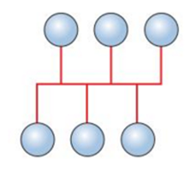
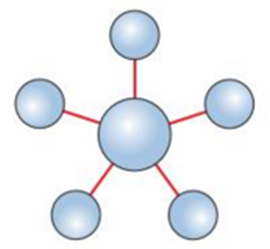
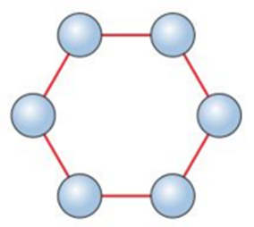

Network Topologies
Bus
A bus network is a network topology in which all computers are connected to a single back-bone wire. While this is a simple system to setup, It has the disadvantage of data-collisions, as data can travel in both directions down the back-bone. It also requires terminators at both ends to prevent data reflecting back and creating more collisions. Bus is also vunerable in that if the back-bone fails, the whole network goes down.
Star
The star network topology is a method in which all devices are connected to one central server or switch individually. It's more robust than bus, as any one cable failing doesn't compromise the others. It's also safer in terms of data corruption, as data collisions are avoided because there are only 2 devices on each cable. It's also very easy to add new devices to a star network; simply connect another device to the switch. Star networks are the most common network topology.
Ring
Ring topology networks overcome the problem of data collisions by creating a ring of connections that data can only travel through in one direction. Ring networks are vunerable, as if one cable fails, the whole network is unable to communicate with the rest. Ring networks are also relatively difficult to add new devices to.